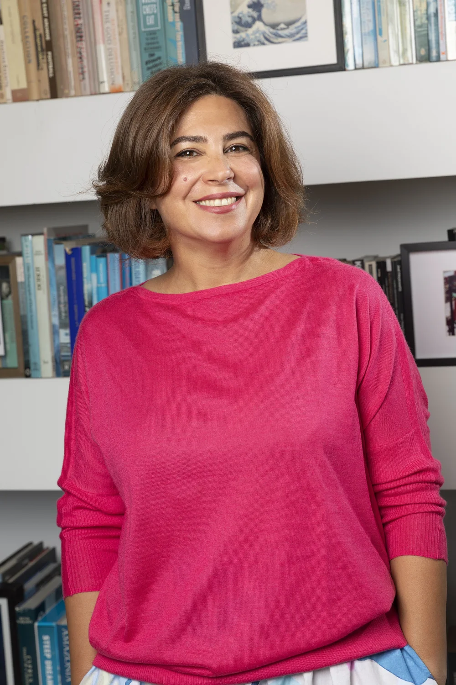

Author · story teller · creative thinker
Connection has always driven me. I want to understand, to listen, and to form real human links.
I am at my happiest when I am solving problems and creating—when there is flow. I’ve come to believe that flow appears when we are on the right road, and much of my work is helping others find that road too: the path with the least resistance, the one that lets them move forward with ease. That applies to me just as much as to them. Resistance is powerful—but it also points toward what matters.
My own search has always been for home, both physical and beyond. That space is where I create, where I listen, and where I work—with words, with my family, with uncertainty. It’s where I invite others to begin.
Welcome.
